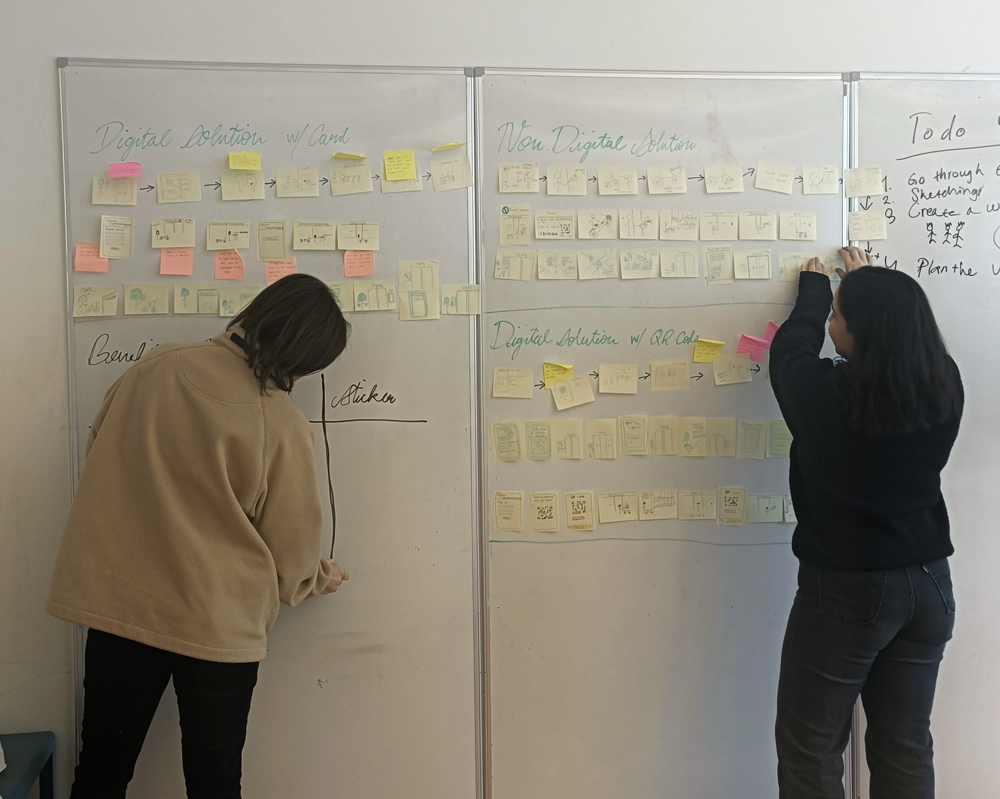
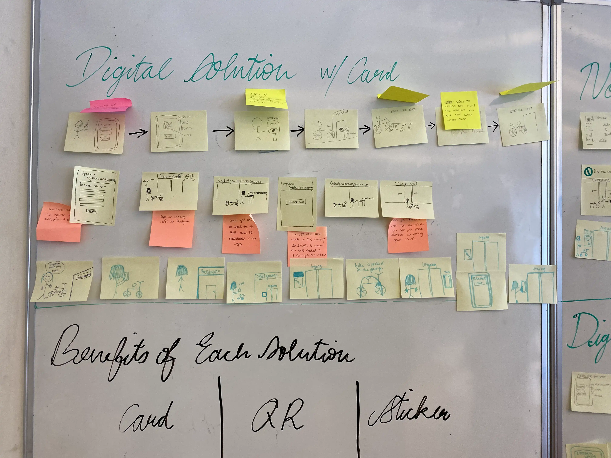
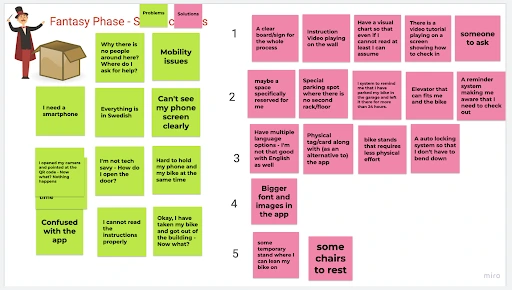
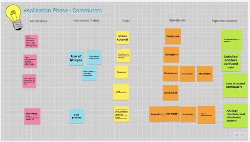
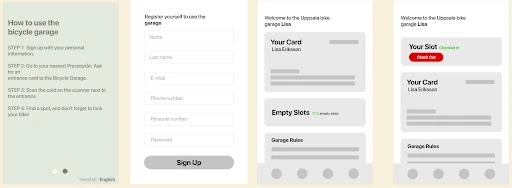
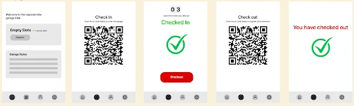
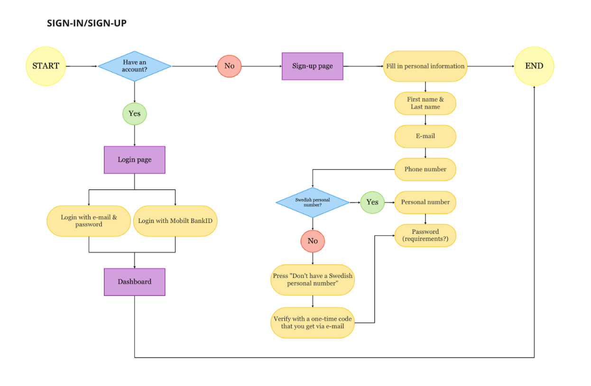
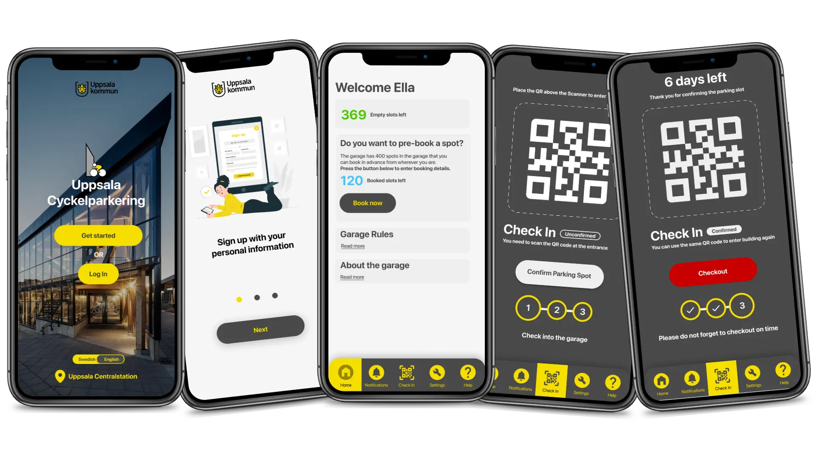
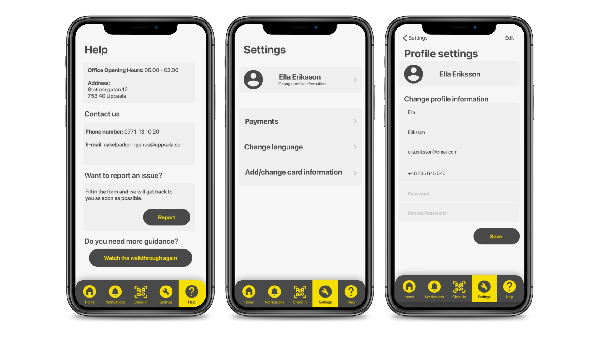

This project aimed to improve the bicycle
parking experience at the Uppsala Central Station's bicycle garage,
to promote sustainable and well-designed urban spaces for
commuting. While the garage was built with good intentions,
our team discovered key usability and service flaws.
Through iterative and Participatory Design methods, we worked to enhance
both digital and physical touch-points, with a focus on the confusing
check-in/check-out system that often left users
frustrated or fined.
Our team of four university students used research-through-design
and participatory methods to identify problems,
validate insights, and prototype solutions.
My Role
Medium-Fidelity Prototyping (Figma), Interviews & On-Site Observations, Kanban Management, Workshop Facilitation.
Tools
Miro, Figma, Canva.
Team Members
01 / On-Site Observations
We kicked off the project by visiting the Uppsala Cyckelparkeringshuset at Uppsala Central Station, to view the garage. This garage was relitively new at the time but was being used at almost full capacity. However, many cyclists who used the garage on a daily basis were critical about it’s on-site service as well as the mobile app service needed to register and use the cycle garage.

We had conversations with a few cyclists and staff members that were present in the garage at the time we visited, while also making further observations of the building's structure and services. A few pain-points and suggestions that quickly emerged were:
- Wayfinding Friction: Users experience significant difficulty locating their parked bicycles within the facility.
- Physical Ergonomics: The two-tier parking racks present severe physical usability challenges for a wide demographic.
- Environmental Failure: The physical QR code scanning system becomes unreliable during adverse weather conditions.
- Perceived Security: The ambient environment of the garage lacks adequate measures to make users feel consistently safe.
- Digital Usability: The existing mobile application introduces high cognitive load and confusing navigational pathways.
- Spatial Inefficiency: Users hold or abandon spots for extended periods, severely reducing the turnover rate.
- Strategic Misalignment: The system architecture currently struggles to prioritize target daily-commuters over long-term storage users.

Interview Participant - “It is a hassle to get in and figure out the application, but once I am inside everything is well."
The main constraint we had for designing a solution to these problems was to focus only on a digital outcome, as on-site rebuilds or renovations were not possible due to budget concerns. So for the project we narrowed down our focus on a digital solution, focusing on the confusing check-in and check-out system on the app.
02 / research through design
We took on the design process with a research through design approach. In our case, iteratively tackling the check-in/check-out system through rapid prototyping and validation.

03 / UX Research
We used the following UX Research and Ideation methods to continuosly validate the rapid prototyping that happened simultaneously.
- Conducted digital participatory workshops to map commuter security priorities.
- Isolated the primary usability failure: the friction between the digital check-in application and the physical garage infrastructure.
- Segmented demographics (Students, Seniors, Commuters) to synthesize targeted requirement specifications via MoSCoW analysis.
- Developed user flows and low-fidelity wireframes for three distinct analog and digital solutions.






The wireframes from the upcoming section were validated through semi-structured interviews with four daily commuters who use the garage and other ones across the city, from varying age-groups. The feedback and insights from the validations were used to narrow down to one final design solution.
04 / Prototype
The final prototype delivers a, QR-based check-in/check-out flow featuring time-bound slot pre-booking and real-time dashboard availability. To resolve the inefficiency of abandoned spots, the system requires a two-step physical verification: users scan a personal QR code at the entrance, followed by a rack-specific sticker to confirm their exact parking location. To mitigate the persistent issue of users forgetting to check out within the municipality's 9-day limit, the interface utilizes a checkout module and notification triggers. This digital architecture requires minimal physical infrastructure updates, limited to entry scanners and rack stickers, ensuring a cost-effective and scalable deployment.

